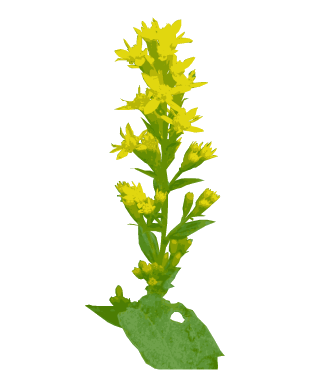
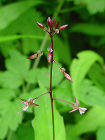
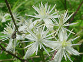
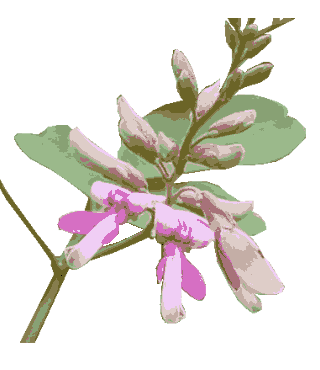

ありのまま、考えを離れて見ると探していた答えがいつでも出ている。
▼血赤色
ワレモコウは日当たりのよい丘陵や山地の草地、川の土手などに生える多年草。茎は上部で枝を出し、直立して高さ30～100cmになる。太さ1cmの根茎がある。根生葉は5～11枚の小葉からなる奇数羽状複葉で、小葉は楕円形で鈍頭。基部は円形または心形でへりには歯牙状の鋸歯がある。枝先に長さ1～2cmの穂状花序をつけ、濃血赤色花が上から下へと咲きすすむ。花弁はなく広だ円形のがく片が4枚。雄ずい4本、雌ずい1本。『血赤色思いを止めるワレモコウ』
▼準備万端？
ノギランは山の明るい草地に生えるユリ科の多年草。地下茎は短く、多数のひげ根がある。葉は広倒皮針形、鈍頭または鋭頭で基部は細まり、内面無毛で多数根生する。花茎は高さ20～40cmで丈夫に1～2本の枝を出し、総状花序をつくり、多数の花を上向きにつける。花被片は6枚、披針形で基部は合生し、外面の中肋は緑色。雄ずい6本。花柱は柱状で、先が3裂する。果実はさく果。暖地のものほど丈は低く、花柄は長くなる。変種のヤクシマノギランは高さ2～8cmで、花柄の長さ7mm。『雨に濡れ見入るノギラン懲りもせず』
▼月映え
アレチマツヨイグサは川原、海岸、原野、空き地などに生える2年草。越冬葉は幅がせまく、倒披針形である。茎は直立し、高さ1～1.5mとなる。茎の葉は互生し、披針形～広披針形でへりに鋸歯がある。花は黄色で径が2～4cmとなり、上部の葉腋につく。夕刻に開き、翌朝しぼむ。北アメリカ原産の帰化植物。虫媒花。『月に映え誘う匂い待宵草』
▼朝露
シモツケソウは山地の日当たりのよい乾いた草地に生える多年草。羽状複葉。山地で日当たりのよい所って？沼原湿原の木道沿いに多く咲いていました。『朝露にきらりきらめくシモツケソウ』
▼振るう
ミヤマシシウドは亜高山帯の草原に生える大形の多年草。茎は中空で太く、高さ約1m。葉は2～3回3出複葉で、シシウドに似るが、小葉の先が尾状に長くとがる。茎の上部に大形の大散形花序を出し、細かい花を多数つける。大散形花序の枝の数はシシウドより多く、中心部の花で50～65個ある。『風うねりミヤマシシウド花振るう』
▼草レダマ
クサレダマは山中の湿地に生える多年草。地上茎は地下茎から出て直立し、高さ40～80cm、短い腺毛と軟毛がある。葉は2～4枚が輪生または対生し、無柄で披針形～狭長だ円形で先はとがる。名前は地中海周辺を原産とするマメ科の落葉低木レダマの黄色い花から由来するが花弁の形は似ていない。『霧の中分け入る原野クサレダマ』
▼霧雫
ヤナギランは山麓から亜高山帯の土地を切り開いた所や草原などに生える多年草。山小屋の周辺などにあたかも植えたように咲き乱れる。茎は赤みを帯び、高さ1～1.5m。葉は密に互生し、披針形。茎の先に大きな紅紫色の4花弁を総状につける。『霧雫纏い輝くヤナギラン』
▼気づく
リョウブは山地に生える落葉高木。樹皮は茶褐色～暗褐色、なめらかで、老木ではよくはげる。葉は有柄で互生、枝先に集まり、広倒披針形で長さ8～13cm、幅3～9cm、紙質で先端はきゅうにとがり、ふちにはするどいきょ歯がある。枝先に総状花序を出し、ちいさい白色の花を密につける。若芽は食用となり、材は皮つきのまま床柱として使う。庭園樹にも用いられている。『立ち姿見れど気づかぬリョウブ花』『うっそうと茂る緑にリョウブ花』

▼黄輪
アキノキリンソウは山野の日当たりのよい草地や疎林の中などに生える多年草。茎は細くてかたく、直立して高さ30～90cm、下部は黒紫色を帯びる。葉は互生し、長卵状で先は鋭くとがり、へりには鋭い鋸歯があり、基部はくさび形。根生葉は開花時には枯れる。茎の上部に小枝を分け、多数の黄色の頭状花を円錐状につける。別名：アワダチソウ。『探勝路青空向かう黄輪草』
▼蜻蛉
コバノトンボソウは亜高山帯の水湿地、または暖地の低湿地に生える多年草。ホソバノチドリによく似ているが以下の点で区別する。①花は小形。②花数が少なくまばらで、一方にかたよって咲く。③距が長く、弓状に曲がり、後方へはねあがっている。④葉は広線形で上向し、花茎とほぼ平行する。⑤大きな葉をのぞいた上方の葉は、小形で花茎に密着し、目立たない。照葉林帯から針葉林帯まで幅広く分布するが、群生せず、点々と生えていることが多い。ホソバノキソチドリの変種として扱われることもある。『風抜ける水面小葉の蜻蛉草』
▼勢い
キオンは深山の日当たりの良い場所に生える多年草。短い根茎がある。茎は太く直立し、上方で枝を分ける。葉は互生し、広葉針形または卵状長だ円形でへりに不ぞろいの浅い鋸歯がある。茎の上部に散房状に小枝を分け、黄色の頭状花を多数つける。総苞は筒形。総苞片は9～12個、舌状花は5個で、中央に10個あまりの管状花がある。別名：ヒゴオミナエシ。『雄国沼輝くキオン照る陽差し』
▼集う
ノリウツギは山野に生える落葉高木。葉は有柄で対生、ときに輪生、卵形～だ円形で長さ5～12cm、幅3～8cm、質はやや薄く、先はするどくとがり、ふちには低い鋸歯がある。枝先に円すい花序をつけ、白色の両性花とかざり花を開く。根に粘液質が多く、製紙用の糊剤とした。花が美しいので、特にかざり花の集まったミナズキは庭木として植えられる。『ノリウツギ密に誘われ集う蝶』
▼羽衣
イタドリは日当たりのよい山野の荒地や斜面に生える多年草。雌雄異株。茎は中空で高さ50～150cm。葉は互生し広卵形～卵状楕円形で基部は切形である。『イタドリや羽衣のよう輝けリ』
▼和名
イヌトウバナは山地の木陰に生える多年草。花圃の形から塔花。イヌは、トウバナ（淡紅紫色の花）のような、似る、と言った意味合い。『凉げにイヌトウバナと夏の朝』
▼惹き付ける
ヤブガラシはやぶや林のふち、人家のまわりなどに生えるつる性の多年草。根茎は長く地中にのび、あちこちに茎を立てる。茎は短毛があり、紅色を帯びて角ばり、ところどころに葉と対生に巻きひげを出す。葉は5枚の小葉からなる烏足状複葉でへりに荒い鋸歯があり、裏面に光沢がある。中央の小葉が最も大きく、狭卵形。托葉は卵状三角形でへりは薄い膜質となり毛がある。葉に対生して平たい集散花序を出し、毎日1～2個ずつ花を開く。花弁は緑色で卵状三角形、4枚。花盤は朱色で蜜がない代わりに水を溜めて虫を惹きつける。雄ずい4本。雌ずい1本。果実はまれにつき、球形で黒く熟す。『ヤブガラシ仕掛けで虫を惹き付ける』
▼裾野
ハナタデは山野の道ばたに生える1年草。茎の下部は地をはう。葉は卵形～狭卵形で先は細く尾状で、基部はくさび形、薄質で両面にまばらに毛がある。しばしば黒斑が出る。葉鞘は筒状で縁に毛がある。花序は穂状でまばらに淡紅色花をつける。別名：ヤブタデ。『山登りハナタデ揺れる道裾野』
▼古里
セリは水辺、水田、湿地などに群生する多年草。茎は直立し、高さ20～40cm。葉は2回3出羽状複葉で小葉は卵形～狭卵形。不ぞろいの鋸歯があるか深裂する。茎の上部に6～10個の枝がある大散形花序をつける。小散形花序は短いところの柄の先に白色花が10～25個集まって咲く。『今は無き古里の道セリの花』

▼茂る
ヤブマオは山野の明るい林や道ばたに生える多年草。根元より数本の茎が直立し、高さ80～100cm。葉は対生し、卵円形で鋭頭。へりにあらい鋸歯があり、上縁は重鋸歯になることがある。雌雄同株。雌花穂は葉より長い白いひも状で、上部の葉腋に直立する。雄花穂は下部の葉腋から出て花は軸上にかたまってつく。『沢の音ヤブマオ茂る木々の影』

▼里帰り
コフウロは山地の林内に生える多年草。まばらに逆向きの毛があり、基部は倒伏する。葉は有柄で全裂し、裂片はひし状卵形、鈍頭～やや鋭頭、側片は斜卵形でしばしばやや2裂し、ともに少数の大鋸歯がある。下面の脈上と上面にまばらに毛があり、柄は逆向きの圧毛、および反屈短毛があり、托葉は細長くて離生する。花は双生し、淡紅色。小梗には逆向きの短毛があり、がく片には開出する長毛がまばらに生えることが多い。『コフウロや遊び戯る里帰り』
▼朱赤色
フシグロセンノウは山地の木陰に生える多年草。茎は上部で少し出し直立して高さ50～70cmでまばらに毛がある。葉は披針形～卵状披針形で先はとがり、基部はくさび形、全縁で縁と中肋に細かい毛がある。葉柄はほとんどなく対生。花は朱赤色で、茎頂や枝先に対生葉のつくところが黒紫色の節状となることから名づけられた。『朱赤色節黒仙翁今ここに』
▼水の妖精
バイカモは流れのある水中に生えるやわらかな多年草。茎は緑色で細長く中空で、節部からまばらに枝を出して長さ１～２ｍに達する。夏の日差しが照りつける中、川に踏み込み花を手に取って眺めていると汗も引き、爽やかな夏を感じた。『探し見てバイカモ揺れし川に入る』
▼西鬼怒川
イヌゴマは原野の日当たりのよい湿地に生える多年草。地中に長い根茎を伸ばして繁殖する。葉は対生し、皮針形または三角状の皮針形で、へりには低い鋸歯がある。『イヌゴマを見つけ川原に駆け降りる』
▼活き活き
カワラサイコは海の近くの砂地や川原などに生える多年草。茎と葉には長い毛がある。葉は15～29枚の小葉からなる羽状複葉で、小葉間にさらに小さな葉片があり、小葉の裏面は綿毛に覆われる。『活き活きとカワラサイコや暑き故』
▼色輝く
ミソハギは原野の湿地、みぞのへりなどに生える多年草。茎はやや四角で褐色を帯び、高さ50～100cm。上部で枝を分ける。葉は対生し、皮針形で先はとがり、基部は鋭形で柄はほとんどない。葉の脈は裏面へ隆起する。雄ずいは12本で長いものと短いものがある。『見るほどに色輝けりミソのハギ』
▼りんとして
タマアジサイは山地に生える高さ1～3mの落葉低木。葉は有柄で対生し、だ円形～長だ円形～倒卵形、長さ10～22cm、幅5～10cm、質はうすいが表裏に毛がはえ、ざらつき、ふちに細かくするどい鋸歯がある。小枝の先に散房花序を出し、淡紫色の花を開く。つぼみは総苞につつまれ、球になる。両性花の花弁は4～5枚。かざり花のがく片は3～5枚。『張り詰めてタマアジサイや弾け開く』
▼俯けば
イワアカバナは山地の水辺に生える多年草。茎は多く枝を分け、高さ15～70cm。下部は稜線上に、上部は花序まで全面に曲毛がある。葉は対生し、皮針形で鋭頭、基部は円形または鋭形で短柄がある。『うつむけばイワアカバナや白の舞い』
▼あれれ
ハクウンランは林内に生える小形の多年草。貧弱な茎が地面を少し這い、高さ10cmになる。葉は直径1cmほどの卵円形で、2～3枚つく。花茎はまばらに毛がある。『面影にハクウンランの蝶番』
▼湧く
ソバナは山地の林の中に生える無毛の多年草。茎は高さ40～100cm。葉は互生し、卵心形～卵形～広皮針形で先は長く鋭く尖り、あらい鋸歯がある。雄ずいは5本、雌ずいは1本。『濃い緑木陰に蒼きソバナ湧く』
▼打つ音
キヌタソウは山地の林内に生える多年草。茎は直立して高さ30～60cm、全体に毛がない。葉は4枚が輪生し、卵状皮針形～卵形で、長さ2～8cm、幅0.8～2.5cm、無柄である。葉は3本の脈が目立ち、緑と葉脈状に短い毛がある。果実は球形、無毛で布をたたくときに使う砧に似ているために名づけられた。『意に留めて手を打つ音にキヌタソウ』
▼縄文の今
コウホネは、沼や小川に生える多年草の水生植物。水上葉は長卵形ないし長だ円形で鈍頭、基部はやじり形で全縁、質は厚く、表面は光沢があり、裏面は淡紫褐色。10～15枚の花弁は径4～5cmで、雄ずいが多数で雌穂は1本。果実は卵円形の液果で水中で熟す。『大谷石縄文やじりコウホネ花』
▼夏に冷たい風
ハナゼキショウは山地の湿った岩の上に生える多年草。根茎は短く、根が多数でる。茎の高さは10～30cmで2～3枚の線形の葉が互生する。根生葉は線形、鋸歯はない。縦に2つに折れて基部はさやとなり、数枚が2列に並ぶ。雄ずい6本、花被片6枚、長だ円形鈍頭である。『岩山に冷風垂れしハナゼキショウ』
▼チダケサシ
チダケサシは山野のやや湿った草原に生える多年草。茎は直立して30～80cmになり、全体に毛が多い。根生葉は2～3回3出複葉で、小葉は卵状楕円形～卵円形でやや鈍頭、基部はくさび形、ふちに不ぞろいの重鋸歯がある。両面にまばらに毛があり、裏面脈状には腺毛がある。『チチタケを茎に刺したるチダケサシ』
▼フジアザミ
フジアザミは山地の日当たりのよい礫地に生える多年草。茎は葉腋から分枝する。葉は下部に集まり、根生葉は羽状に中裂し花時にも生存する。日本産のアザミ中最大の頭状花をつける。『日本一故に名付けしフジアザミ』
▼目線
ノダケは林の下や草原に生える大形の多年草。茎は太く直立し、分枝する。根生葉と下部の葉は長い柄があり、3出羽状複葉で、さらに3深裂～全裂し、裂片の基部は中央の軸へ幅広い翼に流れる。鋸歯のへりは堅い。『これな～に目線が変わる観察会』
▼遠い夏の思い出
センジュガンピは深山の林の中に生える多年草。茎は叢生し高さ35～80cm、軟毛がまばらにある。葉は皮針形～広皮針形で鋭頭、基部は細く狭くなって無柄で対生する。『奥鬼怒やセンジュガンピを見て下る』
▼時刻む
ホソバガンクビソウは山地の林の下に生える多年草。茎は直立し、少し毛がある。葉は互生。根生葉や茎の下部のものは翼のある長柄があり、卵状長楕円形、花時には枯れる。中部の葉は狭長楕円形で先はとがり、基部は細まり、へりにはまばらに低い鋸歯がある。両面にまばらに軟毛がある。上部の葉は皮針形で小さい。『せり立ちてホソバガンクビ時刻む』
▼白際立つ
アリドオシランは深山の針葉樹林の下に生える多年草。茎はひも状で地をはい、上部は斜上して高さ3～8cmになり、卵形の小さな葉を5～7枚互生する。葉の基部は膜質のさやとなり茎を包む。『黒き地にアリドオシラン際立ちて』
▼突然の出会い
ヒツジグサはかなり深い池沼に生える多年生の水生植物。貧栄養水域を好む。葉は多数で根生し、葉柄は長く葉身は水面に浮かぶ。長さ5～10cm、幅8～15cmの広だ円形で基部は深く切れこみ、両縁は互いに少し重なり合う。花柄は長くのび水面に白色花を1個つける。花弁は8～15枚、長さ2.5～4cmの長だ円形で鈍頭である。果実は卵円形でがくにおおわれる。真夏の日中、とくに未の刻（午後2時）ごろに花を開くことから名付けられている。また、ヒツジグサの仲間は一般に水連と呼ばれる。自分にとって興味のあるなしにかかわらず出会いは突然…想いは？
▼有毒
日当たりのよい渓流沿いの荒地でフジウツギに出会いました。花は房状で一方に片寄ってつきます。１年越しでやっと名前がわかりました。全体にサポニンの一種を含む有毒植物。『名を知らず１年越しのフジウツギ』
▼求める
レンゲショウマは深山の林内に生える多年草。茎は高さが40～80cmになる。葉は大形で、2～4回3出複葉である。小葉は卵形～長だ円形で3浅～中裂し、先が鋭くとがり、欠刻または不ぞろいの鋭い鋸歯がある。茎の上部に淡紫色の花を数個～10数個つける。花弁は倒卵形で開出せず、淡紫色で先の方が濃い。日本固有の1属1種。自分を自分だと思うと自分でない。自分でないと思っても自分に違いない。『自分だあ』と思わなければ自分でないような？間違いを起こす。考え方ではなく自分にあるものを、あるがままに知ることです。
▼立ち止まる
ヤブランは林に生えるユリ科の多年草。地下茎は太く短く、多数の根は細くて丈夫で、一部がふくれる。葉は濃緑色、線形で鋭頭か鈍頭、11～15本の脈があり、縁に微細な鋸歯がある。花茎は数本が根性し、高さは30～50cmで淡紫色。花序は淡紫色の花を数個ずつ各節ごとに束生する。果実は果皮が薄く早期に破れてしまうために、種子が露出している。種子は黒色の球形で1～2個ある。コヤブランは葉の幅4～7mmで7～11本の脈があり、花茎に鈍い稜がある。自分の考えでどんなに結論付けて見ても、それは作り事。自問自答すると、むしろその為に混乱する程、つまらないものです。考えを離れて見ると探していた答えがいつでも出ている。
▼飾らない
ヤマジノホトトギス葉山の林に生える多年草。茎は紫色を帯び、直立して高さ10～40cmで短毛がある。葉は倒披針形～長だ円形で先はとがり、基部は茎を抱く。花は1～2個ずつ葉腋および茎頂につく。花被片は6枚、だ円状長卵形で紫色の班がある。外花被片には褐色毛があり、基部はふくれて球状の距となる。雄ずい6本、花糸は無毛。花柱は3裂し各裂片はそり返ってさらに2裂し、球状のとっきがある。果実はさく果。古くから山草家により栽培されている。『飾るとも飾らざるけりホトトギス』
▼秋の七草『葛』
クズは日当たりのよい野原や山麓の斜面、川や鉄道の土手などに生える大形のつる性の多年草。根は太くて、長くのび、でんぷんを多量に含む。茎は丈夫で長く伸び、他の物にからみついて高さ20m、直径10cm以上になることもある。若い茎の表面には、開出する褐色の毛がある。葉は有柄で互生し、3出複葉で褐色の毛をもつ頂小葉はひし状の円形で、先がとがり、まれに先が3裂することがある側小葉はやや小さくゆがんだ円形で、先はとがり、まれに2裂する。葉の表面は緑色で伏毛がまばらにあり、裏面は白色を帯び、白色の短い毛が密生する。葉腋に長さ10～20cmの総状花序を直立し、密に花をつける。花は長さ18～20mmの紅紫色か、まれにほとんど白色の蝶形花である。果実は扁平の線形で、褐色の開出する毛が密生する。太い根からとりだしたでんぷんがくず粉で、和菓子などに使われている。甘い花の香りもたまらない。コミスジウラギンシジミが産卵する。秋の七草とは、ハギ・オバナ(ススキ)・クズ・ナデシコ・オミナエシ・フジバカマ・アサガオ(キキョウ)。『木の緑色濃く香るクズの花』
▼特技
キンミズヒキは山野の林縁や道端などに生える多年草。全体の粗毛がある。地下茎は太く、茎は分枝し直立する。葉は有柄で、互生する奇数羽状複葉。小葉は荒い鋸歯があり鋭頭。茎頂と枝先に総状花序をつける。果実にはかぎ状の毛があり、動物や人について散布される。『種散らすキンミズヒキの鍵の爪』
▼花の舞
サギソウは日当たりのよい山野の湿地に生える多年草。地下に白いだ円形の球茎をもつ。茎は直立する。葉は互生し、広線形または狭披針形、先はとがり、基部は茎を抱く。茎の上部に短い穂をつくって1～5個の純白で清楚な感じのする花をつける。がく片は3枚で緑色、唇弁は円形で深く3裂し、中裂片は舌上、側裂片は細かく切れこみ、シラサギが翼を広げた姿にたとえられる。後部に細長い距をもつ。観賞用としても栽培されている。また、葉に班のある品種もある。ラン科ミズトンボ属。『サギソウにイトトンボ舞う鶴田沼』
▼盗人の足跡
ヌスビトハギは山地や草地に生える多年草。茎は直立し、高さ60～120cmで、根元は木質になる。葉は茎全体につくはく薄質の3出複葉。まばらに葉を互生し、小葉は卵形で鋭頭。基部はくさび形に細まる。葉腋に総状花序を出す。淡紅色の蝶形花。莢（さや・種を包む外皮）の形が盗人の忍足跡に似ていることから名がついた。『足跡で知れた盗人ハギの花』
▼夏風
湿原の草花を見渡すと葉は対生し菱状卵形で直立するヒメシロネを見つけた。葉のわきに小さな唇形花を咲かせる多年草。『夏風を切り咲き立つヒメシロネ』
▼線香花火
ウドは山野の礫地や原野に生える大形の多年草。茎、葉、花序などに毛がある。茎は太く円柱状で、高さは1～2mに達する。葉は互生し、2回羽状複葉で長い柄がある。小葉は卵形で短い柄があり、厚く、へりに鋸歯がある。若い茎や葉は食用となる。『ウドの花線香花火思わせる』
▼意に背く
クサギは山野に広く生える落葉低木～小高木。葉には長い柄があり、対生し、三角状卵形で長さ7～15cm、幅5～10cm、膜質で先はとがり、全縁で短い毛が密生し、傷をつけるといやな臭気がある。『クサギとは甘い香りと意に背き』
▼
オオバショウマは山地の林内に生える多年草。茎は高さ40～120cm。上方で枝をよく出し、短毛が密生する。根生葉は1～2回3出複葉。小葉は円心形で、掌状に5～9裂し、裂片はとがる。『楓葉のオオバショウマと伝えけり』
▼弟斬り草
オトギリソウは山地の明るい草原に生える多年草。茎は丸く、下部は木化し、上部は花茎を分枝する。葉は対生し、卵状長楕円形、柄がなく基部は丸く、茎を半分抱く。光にすかすと細かい黒点が見える。『伝説を今に伝えし弟斬り草』

▼眺めて
タニタデは山地のやや湿った林内に生える多年草。茎は丸く、曲毛があるか無毛で、葉は対生し、1～3mmの柄があり、長楕円状皮針形または卵形で、先はとがり、へりに低鋸歯がまばらにある。『タニタデや写真眺めて目に留まる』

▼暑い
ボタンヅルは野山の日当たりのよい所に生えるつる性の半低木。茎は角ばり長く伸び、若枝には伏毛がある。葉は対生し、1回3出複葉、小葉は卵形でとがり、へりには鋭い鋸歯がある。『太陽を浴びて暑きはボタンヅル』
▼ふとした
ツルマメは原野に生えるつる性の1年草。茎は細く、長く伸び、他の物に巻きつく。茎には淡褐色の逆向きの毛がある。葉は有柄で互生し、ふつうは3枚、まれに5～7枚の小葉からなる複葉である。小葉は狭卵形または皮針形で、先は丸く、短い伏毛がまばらにつく。『ツルマメに会いて過去を思い出す』
▼里の花
スベリヒユは畑、道端、庭などの日当たりの良い場所に生える1年草。茎は基部が地をはい、枝をよく出し、上部は斜めに立ち上がる。赤みを帯びた多肉質の円柱形。食用となる。葉は倒卵状長楕円形で先がまるく、基部はくさび形、中肋がよく目立ち、ほとんど無柄で互生または対生する。『たくましく地はって花咲くスベリヒユ』
▼盛夏
シラヤマギクは山地や丘陵地に生え、やや日かげを好む多年草。根茎は太くて短く、茎はなめらかで円柱形で直立している。高さは1～1.5m。根生葉には長い葉柄があり、花時には枯れている。葉は心形。茎の葉は互生し、下部のものは長心形で先はとがり、へりには重鋸歯がある。茎の上部ではまばらに散房状に枝を分け、白色の頭状花をつける。頭状花は径20～23mm。『暑さ避けシラヤマギクの森歩む』
▼時をわける
キツネノカミソリは原野、丘陵の疎林の下などに生える多年草。地下に黒茶色の皮をかぶった球形の鱗茎がある。ヒガンバナに似ているが次の点で識別されている。▼葉隠れ
マンリョウは林に自生する常緑低木。赤い実を付け縁起のよい木として鑑賞用に広く栽培されるが、やっと花にお目にかかれた。『林影にマンリョウの花葉に隠れ』
▼水引き
ミズヒキは山野の林ややぶの中に生える多年草。全体に茶色っぽい伏毛がある。茎は40～80cmになり、節がふくれる。葉はだ円形～長だ円形で先は急にとがり鋭端か鈍端、基部はくさび形で短い柄がある。表面に黒色の斑点があることが多い。葉鞘は褐色の膜質で縁と外面に毛がある。茎頂や枝先に細長い穂状花序をつけ、花がまばらにつく。花被片は上側が赤色、下側が白で、和名の水引はこれによる『ミズヒキに結ぶや否か小白桃』

▼川を大切に
鬼怒川を手作りいかだで舟くだりするイベントを見に行った。橋の影で川に足を付け暑さをしのいでの見物。日当たりのよい河原にカワラケツメイが群落を成していた。葉はネムノキと同じ、１枚が細い羽状複葉の多年草。『せせらぎやカワラケツメイ射す日差し』
▼鐘開く
ツルニンジンは山林に生える多年草。茎はつる性で、右巻きと左巻きが定まっていない。葉は、茎の下部では互生するが、上部では短い側枝の先に４枚が接近してつく。『忍び巻くツルニンジンの鐘突きて』
▼鬼菱
オニビシは池沼に浮かぶ1年草。根は水底の泥中にあり、葉は多数集まって水面に浮く。葉はひし形で、下半部のへりは、上半部は不ぞろいの歯牙をもち、表面は濃緑色で光沢があり、裏面には毛がある。葉柄は長く、一部が膨らんで浮き袋の役目を果たしている。実は鉄菱を思わせる形で、ゆでるか蒸すかすると食用となる。『炎天下池沼鬼菱張り浮かぶ』
▼涼風
イワタバコは、山地の木陰の湿った岩壁などに生える多年草。シワとツヤがあり大小不揃いの歯牙状の鋸歯を持つ根生葉が垂れ下がり趣きがある。『涼しげな岩場に垂れるイワタバコ』
▼現に
ゲンノショウコは日当たりのよい原野の草地や道ばたなどに生える多年草。茎は基部が地をはい、上部は立ち上がって枝をよく出し、高さ30～60cmになる。茎葉は対生し、上部の葉のみ3深裂、ほかは5深裂。枝先や葉腋から花柄を出し、先端に白色か紅色の花（ベニバナゲンノショウコという）を2個ずつつける。がく片、花弁とも5枚。果実はさく果で、熟すと5つに裂ける。名前の由来は、下痢止めの薬効すみやかに現れることから『現の証拠』とある。果実の裂開した形が御輿の屋根に似て特徴がある。『感じ入るゲンノショウコの素朴さに』
▼夏の終わり
アゼトウガラシは、田の中や沼のへりなどの湿地に生えるやわらかな無毛の1年草。茎は下部で枝を分けて横に広がり、高さ10～25cmになる。葉は対生し無柄、やや幅のある皮針形でにぶい鋸歯がある。『照りつける日差し田のアゼトウガラシ』
▼秋の気配
秋の七草に詠われるハギではあるが、背丈こそ低いが樹木である。マルバハギは葉より短い総状花序を出し、紅紫色の蝶形花を開く。豆果は10月ごろ褐色に熟すが裂けない。庭木などに良く植えられている。『背伸びして緑に紅挿すマルバハギ』

▼登山口
ヤマハギは山地に生える落葉低木。根もとから生えてこんもりしげる。枝は立ち、しだれない。葉は互生、三出複葉で、小葉は広だ円形～広倒卵形、先端は丸いかややくぼみ、両面に毛がある。葉の付け根から葉より長い総状花序を出し、マルバハギは花序が葉より短く、ミヤギノハギは枝が垂れる。『登山口笑顔迎えるハギの道』
▼湧水風起
真夏の炎天下でも尚仁沢湧水へ向かう沢沿いの木陰は、冷風が流れ爽やかだ。そんなところに群生するキバナアキギリ。レンゲショウマなど色々な草花たちに出会うことができる道である。『アキギリの湧水風起道となる』
▼微かな香り
フジバカマは川べりの土手など日当たりのよいやや湿った所に生える多年草。茎は直立し、高さ1～1.5mになり、下部は無毛。葉は対生し、長だ円形で側片は披針形、いずれもへりに鋭い鋸歯がある。茎の先に散房状花序をつくり、淡紅紫色の頭状花を多数つける。花冠は白に近く、総苞は筒形で、総苞片は2～3列に並ぶ。秋の七草の1つである。『秋近し微かな香りフジバカマ』
▼止まらず
イワショウブは山地の湿地に生える多年草。根生葉は長さ10～20cm、幅4～8mmの線形で先が鋭くとがり、5～10脈があり、へりに短い鋸歯がある。葉は縦に2つに折れ、基部はさやとなり数枚が2裂に並ぶ。茎葉は線形で1～2枚互生する。花柄はふつう3本ずつ束になっている。『青き空止まり知らずイワショウブ』
▼水菊
ミズギクは山地の日当たりのよい湿原に生える多年草。茎は直立し、ふつう単一であるが、ときに上方で1～2の短い枝が出る。葉は互生し、茎葉は卵状皮針形で基部はなかば茎を抱く。根生葉はへら形でロゼット状。『湿原に一粒波紋黄ミズギク』
▼思わなくても
アカバナは山野の湿地や水田などに群生する多年草。根元から匍匐枝を生じ、茎は多く分枝。下部はまばらに曲毛があり、上部は腺毛を密生する。葉は対生し、卵形～卵状皮針形で先は鈍くとがる。両面はまばらに腺毛があり、へりに低い波状歯があり、ほとんど無柄。『触れたとき咲くアカバナに思い無く』
▼風を回す
カニコウモリは低山帯上部～亜高山帯、高山帯下部にわたる樹林に生える多年草。茎は単一で直立し、大型の葉が3枚互生する。葉は腎形で、へりに鋭くけ不ぞろいの歯牙がある。『風回すオクモミジハグマ立ち姿』
▼花想い
雄国沼湿原の霧の中、Ｔシャツでは寒い夏の日の木道脇にひときわ鮮やかなコオニユリと出会いました。細い茎に繊細な風鈴が釣り下がっているよう。『蕾見てカニコウモリの花想い』
▼育む
マツカゼソウは山地の林内に生える多年草。全体に毛はなく、葉は互生し、3回3出複葉。小葉は大きさが不ぞろいで倒卵形円頭。『マツカゼソウ地を育んで時刻む』
▼涼む
ハグロソウは山地や丘陵の林の中に生える多年草。茎は四角形。葉は対生し狭卵形。花は大小2枚の広卵形の苞に抱かれる。『涼み入る大芦川にハグロソウ』
▼矢筈形
ヤハズソウは日当たりのよい野原や道端に生える一年草。葉の脇に淡紅色の小さな蝶形花をつける。葉っぱを引っぱると葉脈に沿って矢筈形に引きちぎれることから名がついた。『葉をちぎり確かめてみるヤハズソウ』
▼木漏れ日
ノササゲは山野に生えるつる性の多年草。茎は細く、黒紫色でほとんど無毛。葉は有柄で互生し、3出複葉。小葉は薄く長卵形で表面は無毛、裏面は白色で伏毛がまばらにある。托葉は、小托葉とともに針状である。『ノササゲや木漏れ日光る森の中』
▼ずっと…
ハンカイシオガマは山地の林縁に生える多年草。根ぎわから斜上し分枝する茎を出し高さ３０～８０ｃｍになる。葉は対生し、数枚の大形の葉が下部に集まり、葉身は卵形か広卵形で羽状全裂する。枝先に花穂をつくり、がくは筒型で先が５裂する。『増えもせずハンカイシオガマ川の淵』
▼芽香
ミョウガは人里近い山の湿った林の下などに生える多年草。葉は2列に互生し長楕円状の皮針形で先は鋭くとがり基部は葉柄となり、その下はさやとなって抱き合い偽茎を形成する。花は1日花。『香を求めミョウガの根元覗き見る』
▼せせらぎ
川沿いの道端でピンクの花を咲かせるフジカンゾウに出会いました。川のせせらぎと緩やかな風に吹かれる夏の夕暮れです。葉は互生で２～３対の小葉を持つ奇数羽状複葉。多年草。『せせらぎやフジカンゾウと揺れる秋』
▼力強く
ヤブタバコは山野の林の下や人家近くの道端などに生える２年草。茎は太い円柱形で枝を分け、葉には著しいしわがあり、上部の枝の葉は次第に小さくなる。ヘリには鋸歯がある。根生葉は花期には枯れる。『太い腕伸ばしへり立つヤブタバコ』
▼甘くない
ノブドウは山野や河原に生えるつる性のなかば木化した多年草。茎の基部は木化し、枝を多数出して長くのびる。ふつう淡褐色の毛がある。葉に対生して集散花序を出す。果実は光沢のある球形で、緑はら紫、青、白と順に色を変えながら熟し、甘くはない。『地に伏せしノブドウ実る季節かな』
▼挟まる
カワラニガナは川原の草地に生える多年草。多数の葉を束生し、花茎を立てる。全体に白い。葉は互生してやや直立し、広い線形で先が鋭くとがり、へりは全縁であるか、またはわずかに低い歯牙がある。『石ころにカワラニガナや挟まれし』
▼天然成分
ハッカは原野の湿地や水田のあぜなどに生える多年草。茎はまばらに枝を分け、基部から地下茎をのばして繁殖する。葉は対生し、長だ円形で先はとがり、へりには低く鋭い鋸歯がある。『雨上がり沼でハッカ葉噛む香り』
▼円錐花序
ヘラオモダカは沼や沢、溝、水田などの浅い水中に生える多年草。根茎は短い。葉は叢生し、皮針形または細長い円形で、先は鋭くとがり、基部はしだいに細くなって、葉柄に移行する。花茎に多数の枝を輪生状に出して円錐花序をつくる。花は両性花。『細長きヘラオモダカや茎伸ばす』
▼蛸
タコノアシは沼や水田、川原などの湿った、ときどき水をかぶるような場所に生える。葉は狭皮針形～皮針形で、へりに細かい鋸歯があり、両端は長い鋭尖。花はふつう花弁がない。『あししげく通い鬼怒沼タコノア』
▼突き立つ
ガシャモクは湖沼の水中に生える多年草。葉の長さは5～10cm、幅1.5～2.5cmで葉柄も短く、へりには細かい鋸歯があり、花穂は水面から突き出して咲く。『白沢の西鬼怒に立つガシャモク花』
▼数珠
ジュズダマは、田のあぜ、川岸などに生える多年草。稈は太く叢生、直立し、葉のヘリは波打ち無毛。多数の葉腋に花序を束生、直立して柄は3稜形。卵形の玉は苞鞭と呼ばれ、硬く黄緑色の光沢がある。『夏盛り川岸光る数珠の玉』
▼鬼蓮
オニバスは照葉林帯のため池などに生える1年草。浮き草の大きいもので3m（浮き草としては世界最大）となる。全身に硬いとげがあり、種子は食用となる。『狭き池オニバス広げるとげと花』
▼夏の夜花
カラスウリは林や藪地、人家のまわりなどに生える多年草。茎は細くて長いつるになり、細かい毛を持ち巻きひげで物につかまって高くよじ登る。葉は長い葉柄で互生し、乱心形または三角状の心形で、へりには鋸歯があり、両面に毛があってざらつく。下部の葉は切れ込みが深い。『待ち合わせ夜に約束カラスウリ』